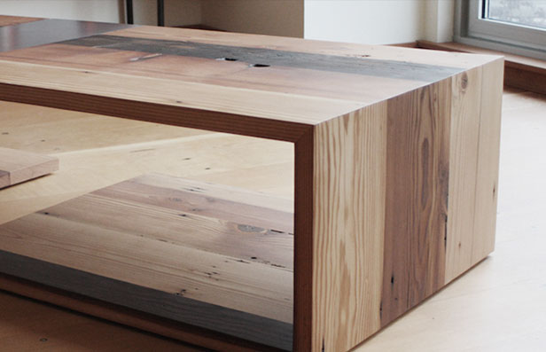
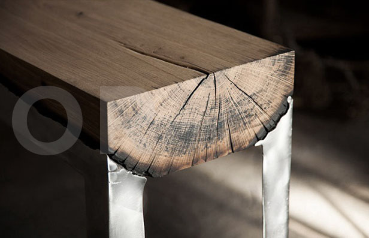

Furniture
Wooder utilizes materials otherwise left behind, rendered
useless in their original intent. By creating new pieces made of
reclaimed barnwood

Decor
We make all types of wooden decor as per design given by
Architect,Interior designer, contractor which is suitable your
premises.

wooder – is quality
We create unique design objects made of rare wood, specially under the
order.
Look at the short video about our work.
Look at the short video about our work.
Innovative Design
High-level Skills
Quality Products